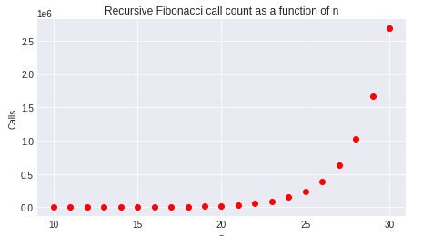

Bad algorithms¶
The Fibonacci sequence is an integer series beginning 0, 1 where every successive digit is the sum of the previous two:
The definition
lends itself directly to a recursive implementation, e.g. in python:
def fib_recursive(n: int) -> int:
global calls
calls = calls + 1
if n < 2:
return n
return fib_recursive(n-1) + fib_recursive(n-2)
[file: src/fib.py]
In the python implementation, as python is a dynamically typed language, we need to check that the argument is both a valid type (integral) and a valid value (non-negative). It makes sense to do this only once - the first time the function is called - so the recursive implementation is split into a separate function.
The rust implementation, thanks to static typing and an unsigned integral type, doesn't require these checks, although it may overflow if \(n\) is high enough and return an incorrect result.
However in both cases there is a major problem with the implementation. For each recursive call to fib two further calls to the function are made and thus there is a potential for the call stack to grow exponentially. For large \(n\) this will cause the program to run out of resources very quickly.
It turns out that, in general, for an input value of \(n\), there will be about \(\phi^n\) calls to fib, where \(\phi\) is the Golden ratio (~1.618). For example this table illustrates the number of calls to the python implementation for a small range of \(n\):
//$include md output/fib_recursive_table.md
Or in graphical form, the execution time:

and the number of calls is clearly the dominant factor causing the execution time:

As you can see, for even fairly small n the function is taking prohibitively long to run, and calling itself hundreds of millions of times. In algorithmic complexity terms, this is known as exponential time complexity and should be avoided at all costs. The point I'm trying to make here is that the obvious (but perhaps naiive) implementation of a mathematical function is not always the best approach, and a good (research or otherwise) software engineer should know this.
So lets try again. Perhaps a better approach would be to compute the entire sequence up to \(n\) and just return the final value, in python something like:
ERROR src/fib.py (python) too few/many tags (0) for '!fib-array!'
And the execution time is vastly improved:
{ include_snippet("docs/output/fib_array_table.md") }}
The question is, what does this graph tell us about how the execution time of the array Fibonacci algorithm varies with \(n\)?. Looking at the code we can see that there is one loop so it would be reasonable to expect that the algorithm is \(O\big(n\big)\) (it actually is). But the data is very noisy, so how do we determine
- that he behaviour is linear, and
- the slope, so that we can estimate execution time by extrapolation?
Data scientists would perhaps initially suggest linear regression, others might simply suggest averaging the execution time over multiple runs, but there is a problem with this: the noise is biased. Here's why.
Modern operating systems run hundreds of processes on hardware that has multiple cores and these processes are competing to consume resources. But CPUs can only run a small number of processes simulteneously, so the operating system has to be able to share the CPU resources between all the processes. Whilst operating systems are cleverly designed to hide all this and provide a smooth user experience, there are limits. I'm sure you've all experienced the slowdowns incurred when a process maximises CPU usage or the system runs low on memory.
When you are profiling code, however, these effects become much more noticeable, and particularly in interpreted or garbage-collected languages where the language runtime itself could be competing with your code for CPU resources. So using actual time (often called wall time, referring to a wall clock) is a very crude measure of performance. Low-level profiling tools use much more sophisticated metrics including analysis at the hardware level, but these tools require some effort (and sometimes money) to get working, so may not be available to everyone, and may be overkill for a quick benchmark.
Any program will have a theoretical minimum execution time for a given platform, when (by chance) it is not impeded by competing processes or threads, and this value is really what we are looking for when we want to determine how the values if \(n\) impacts execution time. So there's a simple solution, instead of averaging multiple runs, we should take the minimum of multiple runs - put another way, we need never to worry about a datapoint underestimating the execution time.
As you can see from the red points in the graph below, there is a much clearer linear signal emerging using only 3 runs:
TODO extrapolation is dangerous...
The only drawback of the array Fibonacci algorithm is that the amount of storage required to compute the value grows with \(n\), and all the intermediate results are discarded. Specifically, this algorithm has both linear time compexity and linear space complexity, since both the number of operations and the amount of storage is proportional to \(n\). If we were calculating terms in the sequence for lots of very large \(n\) this could potentially be problematic with storage: there could potentially be a lot of redundant computation and duplication of data, plus a lot of repeated memory allocations and deallocations will impact performance.
Since there is only one sequence, a better approach could be to have a single cached sequence that is extended as necessary. In C++ you could implement it like so:
{ include_snippet("src/fib.cpp", "fib-cached") }}
However, if you tried a similar approach in rust, you would encounter a very unhappy compiler. It's worth looking into the reasons why this is the case. Basically, this code is not threadsafe. Imagine that it's being called roughly simultaneously by two threads, each requiring different values. Let's say thread 1 calls the function asking for the 100th number in the sequence, and the cache contains only 50 values. It will resize the cache to 101 and start to compute the missing values. Now thread 2 might enter the function whilst this is happening, and want the 75th value in the sequence. It will check the cache size and decide it can simply return the approriate value. The problem is, we don't actually know whether that value has been computed yet, so the result may be wrong, or it may (by luck) be correct if thread 1 has got that far.
This is an example of undefined behaviour. Programs like this are not deterministic as it's impossible to say where individual threads will be relative to each other during program execution. The results may or may not be incorrect, the program may even crash, and debugging is extremely difficult as it's often impossible to consistently reproduce an error.
Undefined behaviour is perhaps the prime motive for the development of rust. The rust compiler is extremely strict and this strictness enables it to detect many situations where undefined behaviour may arise. For this reason rust is often considered a difficult language to learn, especially for those coming from more forgiving languages. All I can say is it's worth it. Even if you go back to your old, more forgiving, language you will look at your code in a new, more defensive, light.
We could fix the problem in the C++ code above by blocking multiple threads entering the function (using a construct called a mutex lock). But this is likely to result in degraded performance, and more complicated code, which has a maintenance overhead.
The days when it was quicker to cache simple computations (reading precomputed random numbers from a file was once a thing!) are way behind us. The increase in CPU performance over that last decades has been even greater than those memory or even disk performance.
So perhaps the best solution might be simpler... going back to the definition, we see that we don't need to store every term, we only need the previous two terms in order to compute the next term. So we should be able to write an algorithm that is linear in time complexity and constant in space complexity.
Worse-than-exponential algorithms¶
Perversely I wanted to explore how could implement something even more insanely inefficient than an exponential time algorithm so I had an idea...
References¶
Dasgupta, Papadimitriou and Vazirani, Algorithms, McGraw-Hill, 2008. ISBN 978-0-07-352340-8